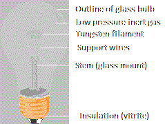
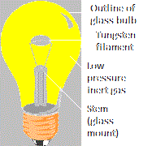

Arnob Ghosh

I am an undergraduate student in the Department of Computer Science at the Memorial University of Newfoundland.
I took my IGCSE in June 2019 on 8 subjects, among which my most favourite subject was physics. My most favourite chapter in physics was about current (electricity).
Yeah! "Bloody Circuits! And just like that I started having an obsession towards a common component of circuits... LIGHT BULBS!!! Nowadays whenever I see light bulbs, I observe different parts of it. Yeah, something as simple as a light bulb has "parts" that make the bulb work! Incase now you are interested, here I have an image of a bulb with its parts labelled by me:
Oh, I'm sorry. Is it too dark to see a few parts? Let me brighten it up a bit:
Now if you, like me, have got interested about the significance of each part, you can refer to this wikipedia article.
But... "why?" If you still lack the motivation to hop into the wikipedia article and are wondering why you should learn about the parts in details, well... I guess when you will be able to understand the above models, with enough resources, you may be able to make a light bulb yourself!
Okay, maybe it is a bit late to ask, but what's "light bulb"?
Hmmm... Good question. In this generation of LED lights, it is okay to not have seen a light bulb in real life at all. But now the pressure is on me. How can I make you understand what a light bulb is, what its functionality looks like etc? Hmmm... Okay, I have an idea. I will let you use my light bulb! Click the bulb link.
Contact
Arnob Ghosh
Student of Computer Science
Memorial University of Newfoundland
St. John's, NL, A1B 3X5
Canada